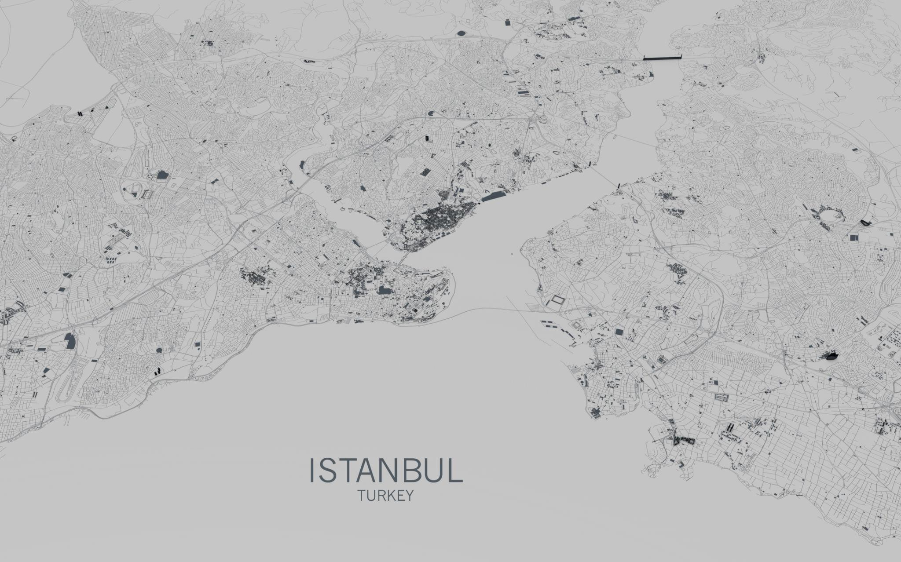
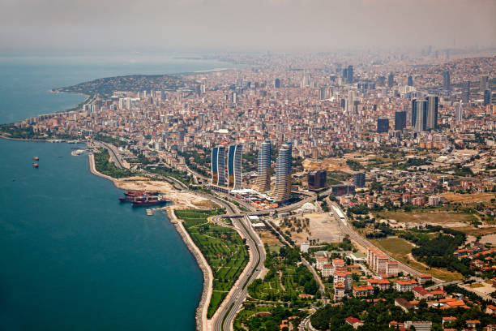
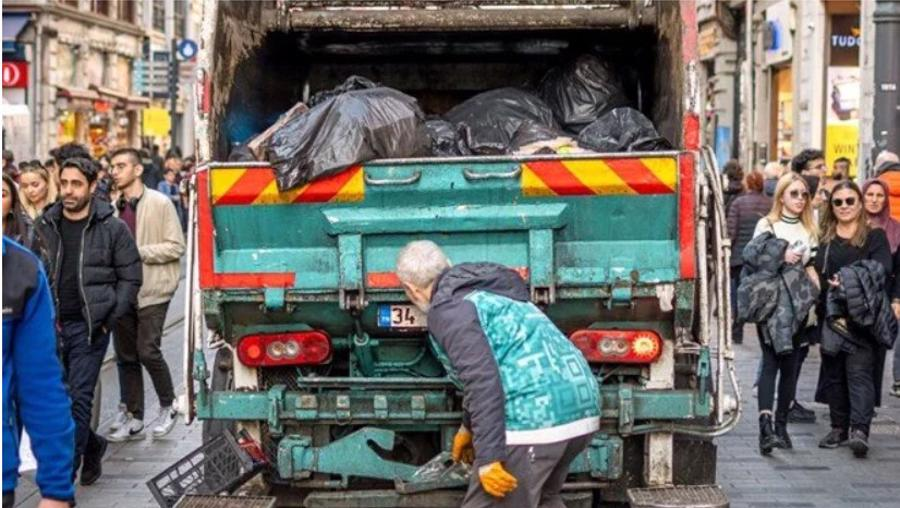
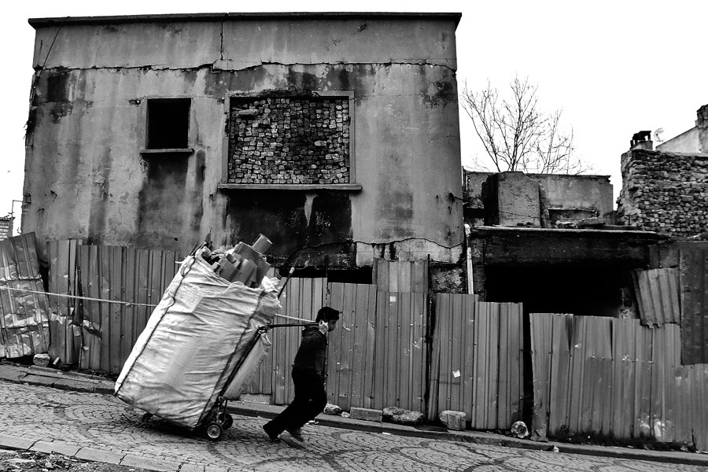
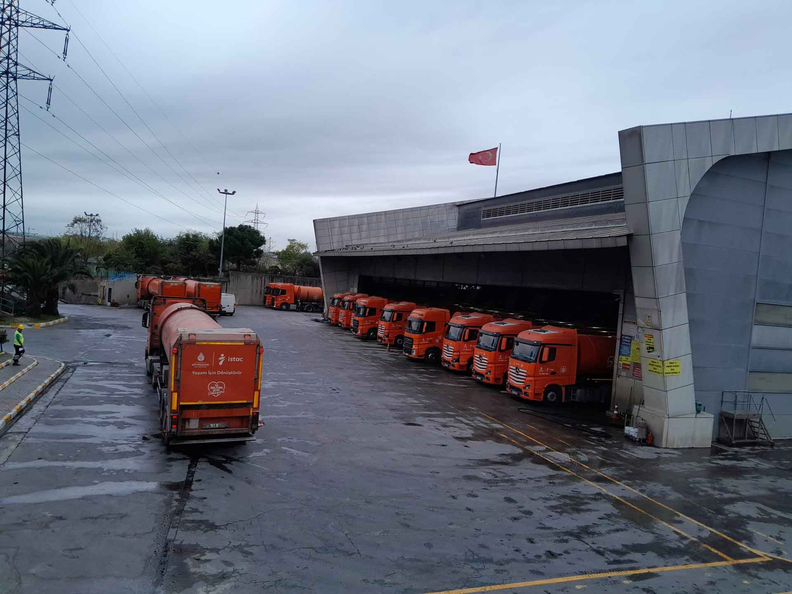
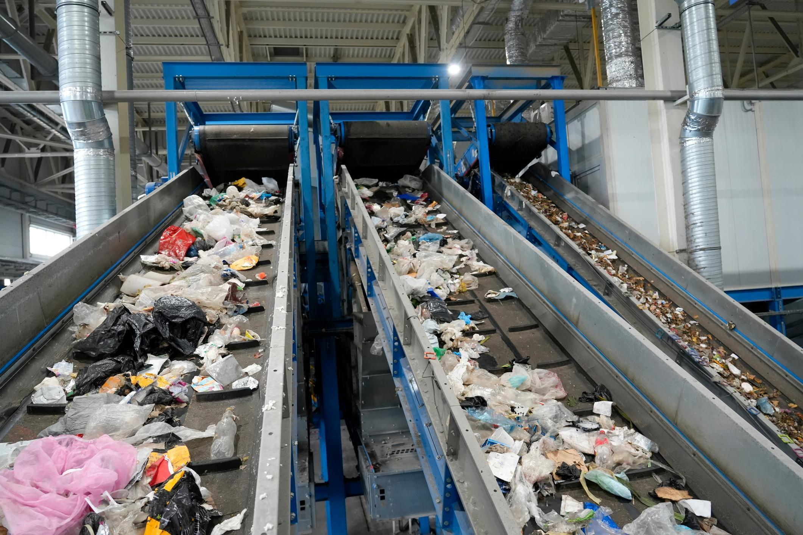
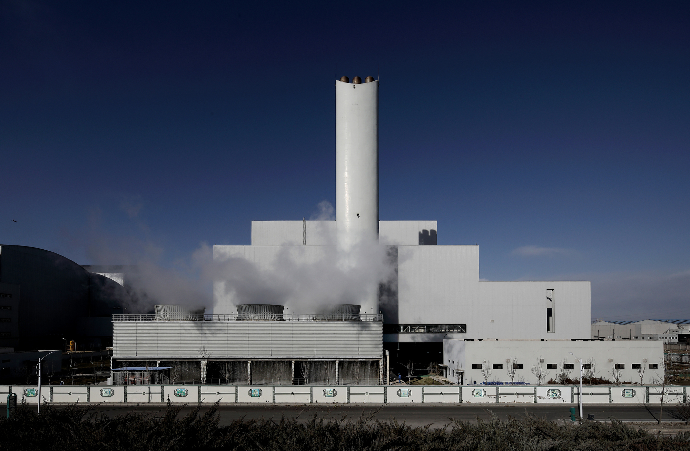
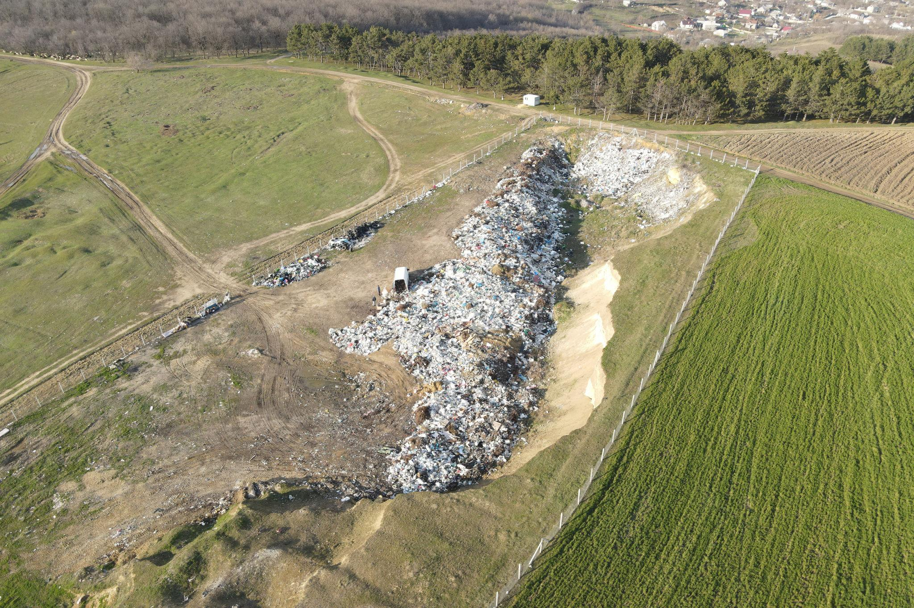
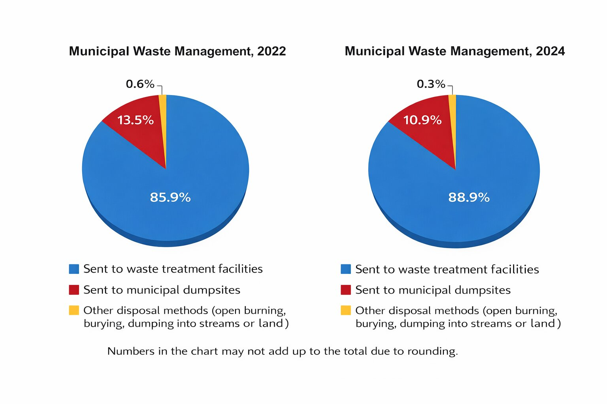
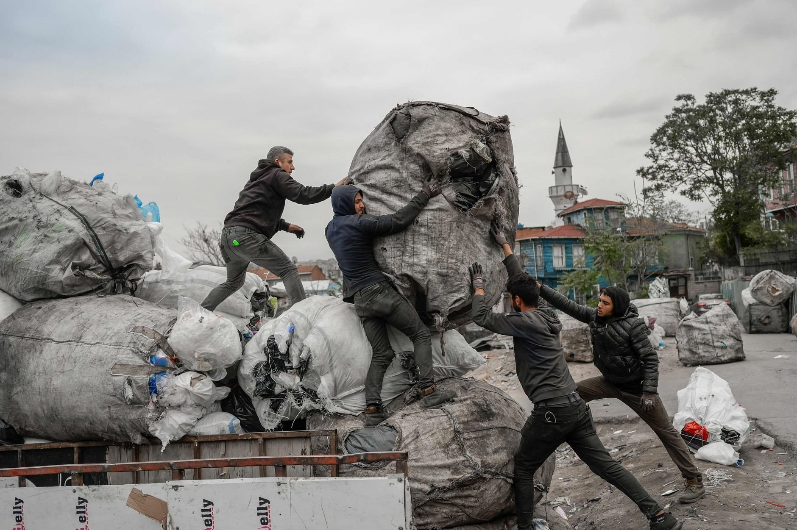

The invisible system

Packaging waste doesn’t “disappear” after it leaves our homes. It enters a regional system of collection, transfer, processing, recovery, and disposal.
This story map traces the journey of waste generated in Maltepe and shows how it becomes part of a much larger metropolitan waste infrastructure network across Istanbul.
Waste begins in Maltepe

Packaging waste is generated daily in households, restaurants, offices and shops across Maltepe.
On the map, Maltepe is highlighted as the origin point—but the system it feeds is city-wide.
Collection comes first

Waste does not go straight to recycling plants. First it moves through the municipal collection system: neighborhood pickup, local handling, and early sorting.
The hidden workforce: paper collectors

Beyond the formal municipal system, Istanbul also has an informal waste economy. “Paper collectors” recover valuable materials (cardboard, plastics, metals) directly from the urban waste stream.
This isn’t about blaming individuals—this layer reveals how economic need, policy gaps, and urban inequality shape what recycling looks like in practice.
Transfer stations: waste starts moving

Transfer stations consolidate waste from multiple districts. From here, waste is routed to different facilities depending on type, capacity, and logistics.
Recycling facilities: material recovery

Only a portion of packaging waste reaches recycling facilities. Here, materials are sorted and processed so they can re-enter production cycles.
Energy recovery

Some waste is processed through energy recovery, where waste becomes fuel for electricity/heat generation. This step reframes “waste” as an energy resource—but also raises debates about emissions and long-term sustainability.
Landfills: the final destination

Despite recycling efforts, a significant share of waste still ends up in landfills. This is the “end of the line” for many materials—especially when separation is incomplete.
Bigger picture and numbers

To place Maltepe’s story in a broader context, national-level statistics highlight the scale of municipal waste management.
• In municipalities receiving waste collection services, 32.3 million tons of waste were collected.
• 88.9% was sent to waste treatment facilities.
• 10.9% was sent to municipal landfills.
• 0.3% was disposed of through other methods.
• Average daily waste generation per person: 1.09 kg.
Hidden flows, limited transparency

Once waste leaves the district, it becomes part of a larger infrastructure system that is rarely traceable at the district level. Making these flows visible helps us ask better questions about responsibility, equity, and environmental outcomes.
In a growing culture of consumption and “throwaway” lifestyles, how much do we care where our waste goes once it leaves home? And how accessible is the data that should make these processes transparent?